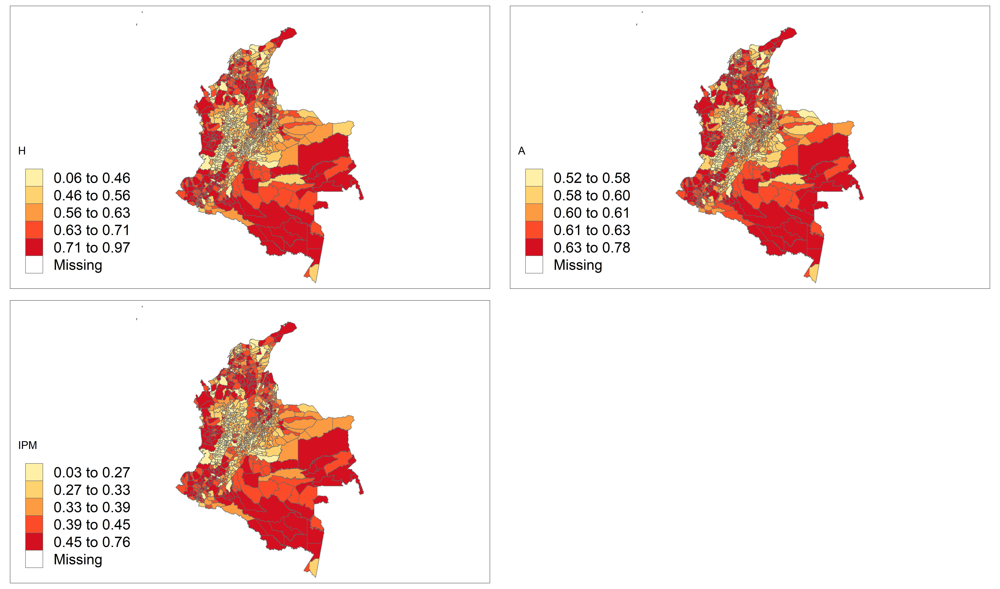

Capítulo 5 Mapa del IPM por municipio de Colombia
Dado que los municipios son otro nivel de desagregción, es posible realizar un mapa municipal para \(H\), \(A\) e \(IPM\). Para realizar el proceso, previamente se guardaron las estimaciones necesarias en un archivo .rds el cual usaremos a continuación:
library(sf)
library(tmap)
estimado_ipm <- readRDS(file = "Modelo_bayes_HxA/COL/Data/estimado_ipm.rds")
ShapeSAE <- read_sf("Modelo_bayes_HxA/COL/Shape/COL_dam2.shp")
brks_H <- c(0, 0.2 ,0.4, .6, 0.8, 1)
brks_ipm <- c(0,0.01 ,0.04, .07, 0.1, 0.15, 0.25)
brks_A <- c(0,0.04 ,0.05, .06, 0.07,.1)
maps3 <- tm_shape(ShapeSAE %>%
left_join(estimado_ipm$dam2, by = "dam2"))Para crear los mapas se usa la siguiente sintaxis
Mapa_H <-
maps3 + tm_polygons(
"H",
breaks = brks_H,
title = "H",
palette = "YlOrRd",
colorNA = "white"
)
Mapa_A <-
maps3 + tm_polygons(
"A",
breaks = brks_A,
title = "A",
palette = "YlOrRd",
colorNA = "white"
)
Mapa_ipm <-
maps3 + tm_polygons(
"ipm",
breaks = brks_ipm,
title = "IPM",
palette = "YlOrRd",
colorNA = "white"
)
Mapas <- tmap_arrange(Mapa_H, Mapa_A, Mapa_ipm)
tmap_save(
Mapas,
"Modelo_bayes_HxA/COL/Output/COL_IPM.jpeg",
width = 6920,
height = 4080,
asp = 0
)